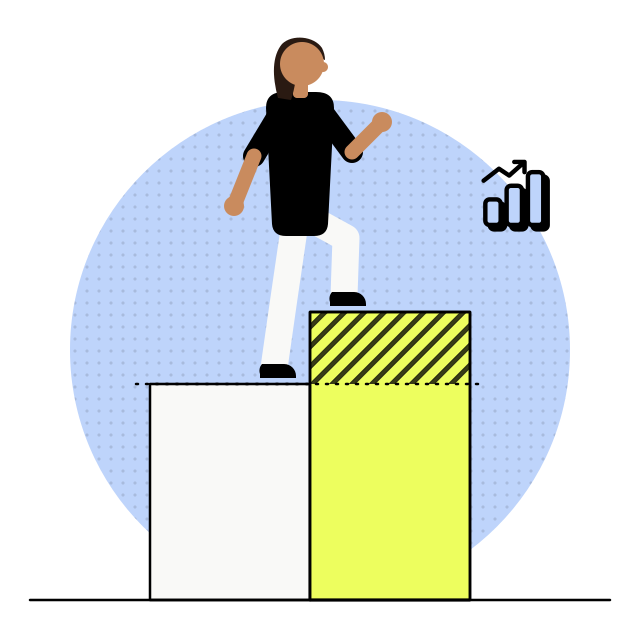

- Omnichat
- Agentic Experience
- Agentes conversacionais
Verificação de intenção dos agentes conversacionais
A maior perda de conversão não estava na interface. Estava na camada onde a intenção do lead entra no sistema.
Ficha do projeto
- Duração
- 4 meses, com 8 semanas de medição em produção
- Jeff
- Product Design Manager, responsável pelo desenho da camada de decisão e pelo recorte do experimento
- Time
- 2 engenheiros de IA e 1 analista de dados
A conversão de leads qualificados nas origens redesenhadas, medida em produção ao longo de 8 semanas sobre cerca de 40 mil conversas, comparando com o fluxo anterior no mesmo período.

01 · Antes e depois
O mesmo lead de Instagram, nas duas versões da fronteira de entrada
 AntesConversa abandonada
AntesConversa abandonada
- Lead · Instagram
Oi, vi aqui no Instagram e queria saber mais
- Agente
Olá! Tudo bem? Posso te ajudar com informações sobre nossos produtos. Qual o seu nome?
Trata a primeira mensagem como pergunta genérica - Lead · Instagram
É sobre aquilo que apareceu no anúncio
- Agente
Temos várias opções disponíveis. Quer fechar o plano anual em 12x sem juros?
Oferta apresentada antes de a intenção existir - Lead · Instagram
…
Conversa abandonada no quarto turno
 DepoisLead convertido
DepoisLead convertido
- Lead · Instagram
Oi, vi aqui no Instagram e queria saber mais
- Agente
Oi! Você chegou pelo anúncio da campanha de inverno. É sobre isso que quer falar, ou é outro assunto?
Camada 02, jornada por origem - Lead · Instagram
É sobre isso mesmo
- Agente
Fechado. Antes de te passar valores, só confirmando: é para uso próprio ou para revenda?
Camada 03, verifica antes de ofertar - Lead · Instagram
Uso próprio
- Agente
Então a opção que faz sentido é a que estava no anúncio, com entrega para a sua região. Quero já reservar para você?
Camada 03, segue sozinho com a intenção confirmada - Lead · Instagram
Pode reservar sim
02 · Resultado
O agente parou de responder à mensagem e passou a responder à intenção
A conversão de leads qualificados subiu 8 pontos, medida pela taxa dos agentes de vendas conversacionais. O ganho não veio de uma oferta melhor nem de um texto mais persuasivo.
A interface não é mais o objeto principal do trabalho. O objeto é a decisão.
O que o agente pode decidir sozinho, o que ele precisa verificar antes de agir e como mostra isso para quem precisa confiar no resultado. Desenhar bem essa camada foi o que gerou o ganho de conversão.